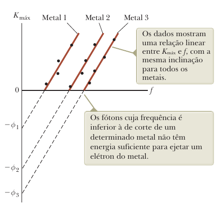

Aula 05 - Efeito Fotoelétrico
Física Moderna 1
Objetivos
Ao final desta aula, você deverá ser capaz de:
- Compreender o conceito de quantização da energia proposto por Max Planck e sua importância para a Física Quântica.
- Explicar o fenômeno do efeito fotoelétrico e sua relevância histórica para o desenvolvimento da Mecânica Quântica.
- Identificar as principais características do efeito fotoelétrico: potencial de corte, corrente de saturação e frequência de corte.
- Analisar os experimentos clássicos que demonstraram o efeito fotoelétrico e sua interpretação através da teoria dos fótons de Einstein.
- Aplicar o conceito de função trabalho na explicação da emissão de fotoelétrons.
- Resolver problemas envolvendo a equação fotoelétrica de Einstein \((hf = K_{\text{máx}} + \phi)\).
- Discutir as aplicações práticas do efeito fotoelétrico em tecnologia e ciência.
- Diferenciar o efeito fotoelétrico do efeito fotovoltaico, compreendendo suas distintas aplicações.
Introdução
No final do século XIX, a Física Clássica parecia capaz de explicar todos os fenômenos conhecidos. No entanto, experimentos sobre a interação entre luz e matéria começaram a revelar comportamentos que desafiavam completamente essa visão. Um desses fenômenos, o efeito fotoelétrico, se tornaria um dos pilares da revolução quântica.
Imagine iluminar uma placa de metal com uma luz muito intensa, mas de cor avermelhada. Nada acontece. Agora, troque essa luz por outra muito mais fraca, mas de cor azulada. Imediatamente, elétrons começam a ser ejetados da superfície do metal. Como é possível que uma luz mais fraca consiga arrancar elétrons, enquanto uma luz mais intensa não? Essa aparente contradição foi exatamente o que intrigou os físicos da época.
O efeito fotoelétrico ocorre quando a luz incide sobre uma superfície metálica e provoca a emissão de elétrons dessa superfície. Esses elétrons emitidos são chamados fotoelétrons. A Física Clássica, que tratava a luz exclusivamente como uma onda, não conseguia explicar por que:
- A energia dos elétrons ejetados dependia da cor (frequência) da luz, e não de sua intensidade (brilho).
- Existia uma frequência mínima abaixo da qual nenhum elétron era emitido, independentemente da intensidade da luz.
- A emissão era instantânea, sem o retardo previsto pela teoria clássica.
Foi Albert Einstein quem, em 1905 (“ano milagroso”), propôs uma solução revolucionária: a luz não é apenas uma onda, mas também consiste em partículas chamadas fótons, cada uma carregando uma energia quantizada \(E = hf\). Essa hipótese não apenas explicava perfeitamente o efeito fotoelétrico, mas também consolidava a ideia de que a energia é quantizada na natureza.
Por esse trabalho, Einstein recebeu o Prêmio Nobel de Física em 1921 (não pela Teoria da Relatividade, como muitos imaginam, mas precisamente pela explicação do efeito fotoelétrico). Nesta aula, vamos mergulhar nesse fenômeno fascinante, compreendendo seus fundamentos experimentais, sua interpretação quântica e suas importantes aplicações tecnológicas.
A História do Efeito Fotoelétrico
As Primeiras Observações
O efeito fotoelétrico foi observado pela primeira vez em 1887 por Heinrich Hertz, o mesmo físico que demonstrou experimentalmente a existência das ondas eletromagnéticas previstas por Maxwell. Hertz notou que uma faísca saltava mais facilmente entre dois eletrodos quando eles eram iluminados por luz ultravioleta. No entanto, ele não compreendeu a natureza desse fenômeno e não o investigou em profundidade.

Posteriormente, Wilhelm Hallwachs (1888) e Philipp Lenard (1900) realizaram experimentos sistemáticos sobre o fenômeno. Lenard, em particular, conseguiu medir a relação entre a energia dos fotoelétrons e a frequência da luz incidente, estabelecendo as bases empíricas que desafiariam a Física Clássica.
Lenard recebeu o Prêmio Nobel de Física em 1905 por seus trabalhos sobre raios catódicos, mas ironicamente tornou-se um ferrenho opositor da explicação quântica de Einstein, mantendo uma postura crítica à teoria dos fótons até o final de sua vida.
A Contribuição de Einstein
Em 1905, Albert Einstein publicou um artigo intitulado “Sobre um ponto de vista heurístico relativo à produção e transformação da luz” (em alemão: Über einen die Erzeugung und Verwandlung des Lichtes betreffenden heuristischen Gesichtspunkt). Neste trabalho, ele propôs que a luz poderia ser pensada como um feixe de partículas discretas — os quanta de luz, posteriormente chamados de fótons.
A ideia de Einstein era ousada e revolucionária. A Física do século XIX havia consolidado a natureza ondulatória da luz através dos experimentos de interferência e difração. Propor que a luz também se comporta como partícula era, na época, uma heresia científica. No entanto, foi exatamente essa hipótese que permitiu explicar o efeito fotoelétrico de forma simples e elegante.
Einstein propôs que cada fóton transfere toda sua energia para um único elétron no metal. Se essa energia for suficiente para vencer a função trabalho (\(\phi\)) do material — a energia mínima para liberar o elétron —, o elétron é ejetado com uma energia cinética residual:
\[K_{\text{máx}} = hf - \phi\]
Onde:
- \(h\) é a constante de Planck (\(6,626 \times 10^{-34} \, \text{J} \cdot \text{s}\) ou \(4,136 \times 10^{-15} \, \text{eV} \cdot \text{s}\))
- \(f\) é a frequência da luz incidente
- \(\phi\) é a função trabalho do material (depende do metal)
Essa equação, conhecida como equação fotoelétrica de Einstein, explica perfeitamente os resultados experimentais que a Física Clássica não conseguia compreender.

A Verificação Experimental
A teoria de Einstein foi inicialmente recebida com ceticismo pela comunidade científica. Foi Robert Millikan — o mesmo do experimento da gota de óleo — quem, entre 1912 e 1915, realizou experimentos meticulosos para testar a equação fotoelétrica. Curiosamente, Millikan era cético em relação à teoria quântica e esperava refutá-la. No entanto, seus experimentos confirmaram precisamente as previsões de Einstein, fornecendo uma verificação experimental robusta.
Millikan não apenas confirmou a relação linear entre a energia cinética máxima dos fotoelétrons e a frequência da luz, mas também obteve um valor para a constante de Planck consistente com o determinado por Planck a partir da radiação de corpo negro. Essa consistência foi um forte argumento a favor da validade da teoria quântica.
Por esses trabalhos, Millikan recebeu o Prêmio Nobel de Física em 1923. Em seu discurso de aceitação, ele reconheceu que, apesar de seu ceticismo inicial, os experimentos o convenceram da realidade da natureza quântica da luz.
Fundamentos Teóricos
A Quantização da Energia
Antes de compreendermos o efeito fotoelétrico em detalhes, é necessário entender o conceito fundamental de quantização da energia, introduzido por Max Planck em 1900.
Planck estava estudando o problema da radiação de corpo negro — a radiação eletromagnética emitida por um objeto ideal que absorve toda a radiação que incide sobre ele. A Física Clássica, ao tentar descrever essa radiação, chegava a um resultado absurdo: a chamada catástrofe do ultravioleta, que previa que um corpo negro emitiria uma quantidade infinita de energia em altas frequências.
Para resolver esse problema, Planck fez uma hipótese ousada: a energia não é emitida ou absorvida de forma contínua, mas sim em pacotes discretos, que ele chamou de quanta. A energia de cada quantum é proporcional à frequência da radiação:
\[ E = nhf \]
Onde:
- \(n\) é um número inteiro (\(n = 1, 2, 3, ...\))
- \(h\) é a constante de Planck (\(6,626 \times 10^{-34} \, \text{J} \cdot \text{s}\))
- \(f\) é a frequência da radiação
Para um único quantum (\(n = 1\)), a energia é:
\[ E = hf \]
Essa hipótese, embora tenha sido inicialmente vista por Planck como um “artifício matemático” necessário para fazer a teoria funcionar, revelou-se uma propriedade fundamental da natureza.
A Constante de Planck e Seu Significado
A constante de Planck \(h\) é uma das constantes fundamentais da natureza, que estabelece a escala na qual os efeitos quânticos se tornam importantes. Seu valor extremamente pequeno (\(6,626 \times 10^{-34} \, \text{J} \cdot \text{s}\)) explica por que não percebemos a quantização da energia em nosso cotidiano: os efeitos quânticos são perceptíveis apenas em escalas muito pequenas, como a de átomos e moléculas.
Uma forma prática de expressar a constante de Planck é utilizando o produto \(hc\), que aparece frequentemente em problemas envolvendo comprimentos de onda:
\[hc = (6,626 \times 10^{-34} \, \text{J} \cdot \text{s}) \times (2,998 \times 10^8 \, \text{m/s}) = 1,986 \times 10^{-25} \, \text{J} \cdot \text{m}\]
Em unidades de elétron-volt (eV) e nanômetros (nm), que são mais convenientes para problemas atômicos e moleculares:
\[hc = 1240 \, \text{eV} \cdot \text{nm}\]
Esta relação é extremamente útil para calcular rapidamente a energia de um fóton a partir de seu comprimento de onda, ou vice-versa.
O Espectro Eletromagnético
A radiação eletromagnética abrange uma vasta gama de frequências e comprimentos de onda, desde ondas de rádio de baixa frequência até raios gama de altíssima frequência. A luz visível, que nossos olhos podem detectar, ocupa apenas uma pequena faixa desse espectro.

Cores do Espectro Visível e Seus Comprimentos de Onda
- Violeta: Comprimento de onda entre 380 e 450 nm, com energia do fóton entre 3,26 e 2,76 eV.
- Azul: Comprimento de onda entre 450 e 495 nm, com energia do fóton entre 2,76 e 2,51 eV.
- Verde: Comprimento de onda entre 495 e 570 nm, com energia do fóton entre 2,51 e 2,18 eV.
- Amarelo: Comprimento de onda entre 570 e 590 nm, com energia do fóton entre 2,18 e 2,10 eV.
- Laranja: Comprimento de onda entre 590 e 620 nm, com energia do fóton entre 2,10 e 2,00 eV.
- Vermelho: Comprimento de onda entre 620 e 750 nm, com energia do fóton entre 2,00 e 1,65 eV.
A relação entre frequência (\(f\)), comprimento de onda (\(\lambda\)) e velocidade da luz (\(c\)) é:
\[c = \lambda f\]
Como \(c \approx 3,00 \times 10^8 \, \text{m/s}\) é constante no vácuo, frequência e comprimento de onda são inversamente proporcionais: quanto maior a frequência, menor o comprimento de onda, e vice-versa.
A energia do fóton, \(E = hf\), é diretamente proporcional à frequência. Portanto, fótons de luz violeta (alta frequência) têm mais energia que fótons de luz vermelha (baixa frequência).
Exemplos Resolvidos: Energia e Quantidade de Fótons
Exemplo 1: Cálculo da Energia de um Fóton
Um feixe de laser emite luz com comprimento de onda de \(532 \, \text{nm}\) (luz verde). Calcule a energia de cada fóton em elétron-volts (eV) e em joules (J).
Solução:
Usando a relação \(E = \dfrac{hc}{\lambda}\):
Para calcular em eV:
\[E = \frac{1240 \, \text{eV} \cdot \text{nm}}{532 \, \text{nm}} = 2,33 \, \text{eV}\]
Para calcular em joules:
\[E = \frac{(6,626 \times 10^{-34} \, \text{J} \cdot \text{s}) \times (3,00 \times 10^8 \, \text{m/s})}{532 \times 10^{-9} \, \text{m}} = 3,74 \times 10^{-19} \, \text{J}\]
Resposta: Cada fóton tem energia \(2,33 \, \text{eV}\) ou \(3,74 \times 10^{-19} \, \text{J}\).
Exemplo 2: Número de Fótons Emitidos por uma Fonte
Uma lâmpada LED de \(10 \, \text{W}\) emite luz com comprimento de onda de \(650 \, \text{nm}\) (luz vermelha). Quantos fótons ela emite por segundo?
Solução:
Primeiro, calculamos a energia de cada fóton: \[E_{\text{fóton}} = \frac{hc}{\lambda} = \frac{1240 \, \text{eV} \cdot \text{nm}}{650 \, \text{nm}} = 1,91 \, \text{eV}\]
Convertendo para joules: \[E_{\text{fóton}} = 1,91 \, \text{eV} \times 1,602 \times 10^{-19} \, \text{J/eV} = 3,06 \times 10^{-19} \, \text{J}\]
A potência da lâmpada é \(P = 10 \, \text{W} = 10 \, \text{J/s}\). O número de fótons emitidos por segundo é:
\[\frac{dn}{dt} = \frac{P}{E_{\text{fóton}}} = \frac{10 \, \text{J/s}}{3,06 \times 10^{-19} \, \text{J}} = 3,27 \times 10^{19} \, \text{fótons/s}\]
Resposta: A lâmpada emite aproximadamente \(3,27 \times 10^{19}\) fótons por segundo.
Exemplo 3: Energia de um Fóton de Rádio FM
Uma estação de rádio FM transmite a \(99,7 \, \text{MHz}\). Qual é a energia de cada fóton emitido pela antena?
Solução:
Usando \(E = hf\):
\[E = (6,626 \times 10^{-34} \, \text{J} \cdot \text{s}) \times (99,7 \times 10^6 \, \text{Hz}) = 6,61 \times 10^{-26} \, \text{J}\]
Convertendo para eV: \[E = 6,61 \times 10^{-26} \, \text{J} \times \frac{1 \, \text{eV}}{1,602 \times 10^{-19} \, \text{J}} = 4,13 \times 10^{-7} \, \text{eV}\]
Resposta: Cada fóton de rádio tem energia \(6,61 \times 10^{-26} \, \text{J}\) ou \(4,13 \times 10^{-7} \, \text{eV}\), uma quantidade extremamente pequena.
O Experimento do Efeito Fotoelétrico
Para compreender o efeito fotoelétrico, é fundamental conhecer a montagem experimental utilizada para estudá-lo e as principais observações que desafiaram a Física Clássica.
Montagem Experimental Básica
A figura abaixo mostra o esquema básico de um aparato experimental para estudar o efeito fotoelétrico.

Os componentes principais são:
- Câmara de vácuo: Contém os eletrodos e permite que os fotoelétrons se movam sem colidir com moléculas de ar.
- Emissor (cátodo): Placa metálica sobre a qual a luz incide. É o material que emite os fotoelétrons.
- Coletor (ânodo): Eletrodo que coleta os fotoelétrons emitidos.
- Fonte de luz: Fornece radiação de frequência controlável.
- Fonte de tensão variável: Permite aplicar uma diferença de potencial entre emissor e coletor.
- Amperímetro: Mede a corrente fotoelétrica.
- Voltímetro: Mede a tensão aplicada entre os eletrodos.
Funcionamento do Experimento
A luz incide sobre a superfície do emissor (cátodo). Se a frequência da luz for suficientemente alta, elétrons são ejetados da superfície e se dirigem ao coletor (ânodo), gerando uma corrente elétrica medida pelo amperímetro.
A tensão aplicada entre os eletrodos pode ser ajustada para:
- Acelerar os fotoelétrons em direção ao coletor (tensão positiva no coletor em relação ao emissor)
- Desacelerar os fotoelétrons (tensão negativa no coletor)
Quando a tensão é negativa, ela cria uma barreira de potencial que os fotoelétrons precisam vencer para chegar ao coletor. Aumentando gradualmente a tensão negativa, chega-se a um ponto em que mesmo os elétrons mais energéticos não conseguem atingir o coletor, e a corrente se torna zero. Essa tensão é chamada de potencial de corte (\(V_c\)).
Observações Experimentais e Resultados
Os experimentos sistemáticos realizados por Lenard e outros revelaram características que a Física Clássica não conseguia explicar. Cada uma dessas observações foi um indício de que a luz se comporta como pacotes de energia (fótons).
- Existência de uma Frequência de Corte (\(f_c\))
Para cada material, existe uma frequência mínima (\(f_c\)) abaixo da qual nenhum elétron é emitido, independentemente da intensidade da luz.
- Se \(f < f_c\): não há emissão de fotoelétrons, mesmo com luz muito intensa.
- Se \(f > f_c\): há emissão de fotoelétrons, mesmo com luz muito fraca.
Microscopicamente: Um elétron precisa receber energia de um único fóton para escapar. Se a energia do fóton (\(E = hf\)) for menor que a energia mínima para arrancar o elétron (função trabalho \(\phi\)), nenhuma quantidade de fótons (por mais intensa que seja a luz) conseguirá ejetá-lo. É como tentar quebrar uma noz com bolinhas de gude: mais bolinhas não compensam cada uma ser fraca demais.
Contradição com a Física Clássica: A onda clássica previa que, com intensidade (amplitude) suficiente, qualquer frequência acabaria fornecendo energia para ejetar elétrons. O experimento mostrou o oposto: ou a frequência é suficiente, ou nada acontece.
- Dependência Linear da Energia Cinética com a Frequência
A energia cinética máxima dos fotoelétrons (\(K_{\text{máx}}\)) varia linearmente com a frequência da luz incidente, e não depende da intensidade da luz.
\[K_{\text{máx}} = hf - \phi\]
Onde \(\phi\) é a função trabalho do material.
Microscopicamente: Cada elétron ejetado recebe a energia de um único fóton. Parte dessa energia (\(\phi\)) é usada para “escapar” do metal; o restante vira energia cinética. Aumentar a intensidade da luz significa aumentar o número de fótons por segundo (mais elétrons ejetados por segundo), mas a energia de cada fóton individual (\(hf\)) não muda. Portanto, a energia cinética máxima não depende da intensidade.
Contradição com a Física Clássica: A onda clássica previa que uma luz mais intensa (maior amplitude) transferiria mais energia para os elétrons, aumentando sua energia cinética. O experimento mostrou que a intensidade afeta a quantidade de elétrons, não a velocidade máxima deles.

- Relação entre Potencial de Corte e Frequência
O potencial de corte \(V_c\) é a tensão negativa (oposta à coleta) necessária para impedir que até mesmo os elétrons mais rápidos cheguem ao ânodo. Ele está relacionado à energia cinética máxima por:
\[K_{\text{máx}} = eV_c\]
Combinando com a equação fotoelétrica:
\[eV_c = hf - \phi\]
Portanto:
\[V_c = \frac{h}{e}f - \frac{\phi}{e}\]
Isso significa que o potencial de corte varia linearmente com a frequência, com inclinação \(h/e\) e intercepto \(-\phi/e\).
Interpretação física: Medindo \(V_c\) para diferentes frequências, podemos determinar experimentalmente a constante de Planck (\(h\)) e a função trabalho (\(\phi\)) do material. Foi assim que Millikan confirmou a teoria de Einstein.
Contradição com a Física Clássica: A onda clássica não previa nenhuma relação linear desse tipo, nem um potencial de corte que dependesse apenas da frequência.

- Emissão Instantânea
A emissão de fotoelétrons ocorre instantaneamente quando a luz incide sobre o metal, sem qualquer retardo mensurável (tempo inferior a \(10^{-9}\) segundos).
Microscopicamente: Assim que um fóton com energia suficiente atinge um elétron, a transferência de energia é imediata (interação fóton-elétron). Não há necessidade de “acumular” energia na superfície.
Contradição com a Física Clássica: A onda clássica previa um retardo considerável (segundos ou minutos), pois a energia da onda seria espalhada pela superfície e levaria tempo para concentrar energia suficiente em um único elétron. O experimento mostrou emissão praticamente instantânea.
- Corrente de Saturação
Quando a tensão aplicada é suficientemente positiva (ânodo atraindo os elétrons), todos os fotoelétrons emitidos são coletados, e a corrente atinge um valor máximo chamado corrente de saturação (\(I_s\)).
O que acontece microscopicamente na saturação?
Emissão constante: A luz (com frequência \(f > f_c\) e intensidade fixa) ejeta um certo número \(N\) de elétrons por segundo do cátodo. Este é o limite máximo de portadores disponíveis no sistema.
Coleta perfeita: Quando a tensão é baixa, nem todos esses \(N\) elétrons conseguem chegar ao ânodo. Alguns são emitidos com pouca energia ou na direção errada e acabam retornando ao cátodo.
Campo elétrico varredor: Ao aumentar a tensão positiva, o campo elétrico entre as placas fica mais forte. Esse campo exerce uma força elétrica sobre os elétrons (carga negativa), puxando-os em direção ao ânodo.
Saturação: Atinge-se a saturação quando o campo elétrico está tão forte que qualquer elétron emitido, independentemente de sua direção inicial ou baixa energia cinética, é imediatamente acelerado e capturado pelo ânodo. A eficiência de coleta atinge 100%.
Platô: Aumentar ainda mais a tensão não aumenta a corrente, pois já estamos coletando todos os elétrons que existem. A bateria não pode “criar” mais elétrons; ela só pode coletar os que a luz ejetou.
- Relação com a intensidade da luz:
A corrente de saturação é diretamente proporcional à intensidade da luz incidente.
- Intensidade maior → mais fótons por segundo atingem o metal → mais elétrons ejetados por segundo (\(N\) maior) → corrente de saturação maior.
- Intensidade menor → menos fótons por segundo → menos elétrons ejetados → corrente de saturação menor.
Atenção: A corrente de saturação não depende da frequência da luz (desde que \(f > f_c\)). A frequência altera a energia cinética dos elétrons, mas não a quantidade deles por segundo (para uma mesma intensidade). Isso porque, para uma intensidade fixa, se a frequência aumenta, o número de fótons por segundo diminui (\(I_{\text{luz}} = n \cdot hf\)), mantendo a taxa de elétrons aproximadamente constante.
Analogia (caixa d’água):
A luz é uma torneira com vazão máxima de \(N\) litros/minuto (elétrons/segundo). O cano (circuito) tem uma válvula (tensão). Abrir a válvula aumenta o fluxo até igualar a vazão da torneira. Depois disso, abrir mais a válvula não adianta: o que limita é a torneira, não o cano. A caixa d’água não enche; ela é passante. O limite é a emissão, não o armazenamento.
Contradição com a Física Clássica: A onda clássica previa que a corrente de saturação (número de elétrons ejetados) aumentaria com a intensidade (correto) mas também com a frequência (pois ondas de maior frequência teriam mais energia para “arrancar” mais elétrons). O experimento mostrou que a corrente de saturação depende apenas da intensidade (número de fótons), e não da frequência (energia por fóton).

Tabela Resumo: Observações vs. Previsões
- Existência de frequência de corte \(f_c\): A observação experimental mostra que existe uma frequência mínima abaixo da qual não há emissão. A previsão clássica não prevê esse fenômeno (acreditava que qualquer frequência funcionaria com intensidade suficiente). A previsão quântica de Einstein prevê corretamente que \(hf_c = \phi\).
- Dependência da energia cinética máxima (\(K_{\text{máx}}\)): Experimentalmente, \(K_{\text{máx}}\) depende da frequência, não da intensidade. A física clássica previa dependência da intensidade. A teoria quântica prevê corretamente a dependência da frequência.
- Relação entre \(K_{\text{máx}}\) e frequência: Os experimentos mostram que \(K_{\text{máx}}\) varia linearmente com \(f\). A física clássica não prevê essa relação linear. A teoria quântica prevê corretamente \(K_{\text{máx}} = hf - \phi\).
- Tempo de emissão: A observação experimental mostra que a emissão é instantânea. A física clássica previa um retardo para acumular energia. A teoria quântica prevê corretamente a emissão instantânea.
- Relação entre corrente de saturação e intensidade: Experimentalmente, a corrente de saturação é proporcional à intensidade. Esta é a única previsão correta da física clássica, e também é prevista pela teoria quântica.
A Explicação Quântica de Einstein
A Hipótese dos Fótons
Einstein propôs que a luz é composta por partículas discretas — fótons — cada uma carregando uma energia \(E = hf\). Quando um fóton incide sobre a superfície de um metal, ele pode interagir com um elétron, transferindo-lhe toda a sua energia.

O elétron, para escapar do metal, precisa vencer a função trabalho \(\phi\), que é a energia mínima necessária para remover um elétron da superfície do material. Essa energia é necessária para superar as forças atrativas que mantêm o elétron ligado ao metal.
Se a energia do fóton (\(hf\)) for maior que \(\phi\), o elétron é ejetado com uma energia cinética residual:
\[ K_{\text{máx}} = hf - \phi \]
Se \(hf < \phi\), o elétron não recebe energia suficiente para escapar, e nenhum fotoelétron é emitido — independentemente de quantos fótons incidam sobre o metal (ou seja, independentemente da intensidade da luz).
Interpretação da Função Trabalho (\(\phi\))
A função trabalho é uma propriedade característica de cada material. Ela representa a energia mínima necessária para remover um elétron da superfície do material e liberá-lo para o vácuo.
A tabela abaixo apresenta os valores da função trabalho para diversos metais, em elétron-volts (eV):
Metais alcalinos e de baixa função trabalho:
- Césio (Cs): 2,14 eV
- Potássio (K): 2,30 eV
- Sódio (Na): 2,36 eV
- Lítio (Li): 2,90 eV
- Cálcio (Ca): 3,20 eV
Metais de transição e outros metais:
- Zinco (Zn): 4,31 eV
- Ferro (Fe): 4,50 eV
- Cobre (Cu): 4,70 eV
- Prata (Ag): 4,73 eV
- Ouro (Au): 5,10 eV
- Níquel (Ni): 5,15 eV
- Platina (Pt): 6,35 eV
Observações importantes:
- Metais com baixa função trabalho (césio, potássio, sódio) são mais adequados para aplicações que requerem detecção de luz visível.
- Metais com alta função trabalho (platina, níquel) exigem luz ultravioleta para produzir o efeito fotoelétrico.
- A função trabalho é geralmente maior para metais de transição e metais nobres.
Determinação da Frequência de Corte
A frequência de corte \(f_c\) é a frequência mínima necessária para que ocorra a emissão de fotoelétrons. Ela corresponde à situação em que a energia do fóton é exatamente igual à função trabalho (\(hf_c = \phi\)), resultando em elétrons ejetados com energia cinética nula:
\[f_c = \frac{\phi}{h}\]
O comprimento de onda de corte \(\lambda_c\) correspondente é:
\[\lambda_c = \frac{c}{f_c} = \frac{hc}{\phi}\]
Luz com comprimento de onda maior que \(\lambda_c\) (frequência menor que \(f_c\)) não produz efeito fotoelétrico, independentemente da intensidade.
Interpretação da Corrente de Saturação
A corrente de saturação \(I_s\) é diretamente proporcional à intensidade da luz incidente porque:
- Cada fóton pode ejetar no máximo um elétron (considerando interações simples).
- Mais fótons por segundo (maior intensidade) significam mais elétrons ejetados por segundo.
- A corrente elétrica é a carga total que passa por unidade de tempo: \(I = \dfrac{\Delta q}{\Delta t}\).
Se \(N\) elétrons são ejetados por segundo, a corrente é \(I = N \cdot e\), onde \(e = 1,602 \times 10^{-19} \, \text{C}\) é a carga elementar.
Exemplos Resolvidos Detalhados
Exemplo 4: Cálculo da Energia Cinética Máxima e Potencial de Corte
Uma superfície de sódio (\(\phi = 2,36 \, \text{eV}\)) é iluminada com luz de comprimento de onda \(\lambda = 300 \, \text{nm}\).
Determine:
- A energia cinética máxima dos fotoelétrons em eV.
- O potencial de corte.
- O comprimento de onda de corte do sódio.
Solução:
- Energia do fóton incidente:
\[E = \frac{hc}{\lambda} = \frac{1240 \, \text{eV} \cdot \text{nm}}{300 \, \text{nm}} = 4,13 \, \text{eV}\]
Energia cinética máxima:
\[K_{\text{máx}} = E - \phi = 4,13 \, \text{eV} - 2,36 \, \text{eV} = 1,77 \, \text{eV}\]
- Potencial de corte:
\[V_c = \frac{K_{\text{máx}}}{e} = 1,77 \, \text{V}\]
- Comprimento de onda de corte:
\[\lambda_c = \frac{hc}{\phi} = \frac{1240 \, \text{eV} \cdot \text{nm}}{2,36 \, \text{eV}} = 525 \, \text{nm}\]
Resposta: \(K_{\text{máx}} = 1,77 \, \text{eV}\), \(V_c = 1,77 \, \text{V}\), \(\lambda_c = 525 \, \text{nm}\).
Exemplo 5: Determinação da Velocidade dos Fotoelétrons
Para o sódio do exemplo anterior, calcule a velocidade máxima dos fotoelétrons em termos da velocidade da luz.
Solução:
A energia cinética máxima em joules: \[K_{\text{máx}} = 1,77 \, \text{eV} \times 1,602 \times 10^{-19} \, \text{J/eV} = 2,84 \times 10^{-19} \, \text{J}\]
Usando \(K = \frac{1}{2}mv^2\): \[v = \sqrt{\frac{2K}{m_e}} = \sqrt{\frac{2 \times 2,84 \times 10^{-19} \, \text{J}}{9,11 \times 10^{-31} \, \text{kg}}} = 7,90 \times 10^5 \, \text{m/s}\]
Em termos da velocidade da luz (\(c = 3,00 \times 10^8 \, \text{m/s}\)): \[\frac{v}{c} = \frac{7,90 \times 10^5}{3,00 \times 10^8} = 2,63 \times 10^{-3}\]
Resposta: \(v = 2,63 \times 10^{-3}c\), ou aproximadamente \(0,26\%\) da velocidade da luz.
Exemplo 6: Determinação da Função Trabalho a partir de Dados Experimentais
Em um experimento com um metal desconhecido, um potencial de corte de \(1,85 \, \text{V}\) é medido para luz de comprimento de onda \(\lambda = 300 \, \text{nm}\), e um potencial de corte de \(0,820 \, \text{V}\) para \(\lambda = 400 \, \text{nm}\). Determine a constante de Planck, a função trabalho do metal e o comprimento de onda de corte.
Solução:
A equação fotoelétrica pode ser escrita como:
\[eV_c = \frac{hc}{\lambda} - \phi\]
Para as duas situações:
\[e(1,85) = \frac{hc}{300 \times 10^{-9}} - \phi\] \[e(0,820) = \frac{hc}{400 \times 10^{-9}} - \phi\]
Subtraindo a segunda equação da primeira:
\[e(1,85 - 0,820) = hc \left(\frac{1}{300 \times 10^{-9}} - \frac{1}{400 \times 10^{-9}}\right)\]
\[e(1,03) = hc \left( \frac{400 - 300}{300 \times 400 \times 10^{-9}} \right) = hc \left( \frac{100}{1,20 \times 10^{-4}} \right)\]
\[e(1,03) = hc \times 8,33 \times 10^5\]
Isolando \(h\):
\[h = \frac{e(1,03)}{c \times 8,33 \times 10^5} = \frac{(1,602 \times 10^{-19})(1,03)}{(3,00 \times 10^8)(8,33 \times 10^5)} = 6,60 \times 10^{-34} \, \text{J} \cdot \text{s}\]
Ou em eV·s:
\[h = 4,12 \times 10^{-15} \, \text{eV} \cdot \text{s}\]
A função trabalho pode ser obtida da primeira equação:
\[\phi = \frac{hc}{\lambda} - eV_c = \frac{1240}{300} - 1,85 = 4,13 - 1,85 = 2,28 \, \text{eV}\]
O comprimento de onda de corte:
\[\lambda_c = \frac{hc}{\phi} = \frac{1240}{2,28} = 544 \, \text{nm}\]
Resposta: \(h = 4,12 \times 10^{-15} \, \text{eV} \cdot \text{s}\), \(\phi = 2,28 \, \text{eV}\), \(\lambda_c = 544 \, \text{nm}\).
Aplicações Tecnológicas do Efeito Fotoelétrico
O efeito fotoelétrico tem inúmeras aplicações práticas em tecnologia e ciência. Algumas das mais importantes são:
Fotômetros e Medidores de Luz
Fotômetros são dispositivos que medem a intensidade da luz. Eles funcionam baseados no efeito fotoelétrico: a luz incide sobre uma superfície metálica, e a corrente fotoelétrica gerada é proporcional à intensidade luminosa.
Aplicações:
- Câmeras fotográficas: medem a luz refletida pelo objeto para ajustar automaticamente a exposição.
- Luxímetros: medem a iluminância em ambientes para verificar níveis de iluminação.
- Espectrofotômetros: medem a intensidade da luz em diferentes comprimentos de onda.
Tubos Fotoelétricos e Fotomultiplicadores
Tubos Fotoelétricos: São dispositivos que convertem luz em corrente elétrica. Consistem em um cátodo sensível à luz e um ânodo que coleta os fotoelétrons. São usados em:
- Sistemas de alarme: detectores de fumaça que funcionam pela interrupção de um feixe luminoso.
- Portas automáticas: detectam a presença de pessoas pela interrupção de um feixe de luz.
- Sensores de proximidade.
Fotomultiplicadores: São dispositivos extremamente sensíveis capazes de detectar fótons individuais. Eles amplificam a corrente fotoelétrica através de múltiplos estágios de emissão secundária de elétrons.

Aplicações dos Fotomultiplicadores:
- Física de partículas: detectam cintilação em calorímetros e contadores.
- Astronomia: detectam luz extremamente fraca de estrelas distantes.
- Microscopia de fluorescência: detectam sinais fluorescentes em amostras biológicas.
- Tomografia por emissão de pósitrons (PET): detectam radiação gama.
Células Fotovoltaicas (Painéis Solares)
Embora frequentemente confundidas com dispositivos baseados no efeito fotoelétrico, as células solares operam por um princípio diferente: o efeito fotovoltaico. A tabela comparativa abaixo esclarece as diferenças:
- Material: No efeito fotoelétrico, utilizam-se metais; no efeito fotovoltaico, utilizam-se semicondutores como silício e germânio.
- Mecanismo: No efeito fotoelétrico, os elétrons são ejetados para o vácuo; no efeito fotovoltaico, os elétrons são excitados para a banda de condução.
- Resultado: O efeito fotoelétrico produz emissão de elétrons, gerando uma corrente externa; o efeito fotovoltaico produz criação de pares elétron-lacuna, gerando uma tensão interna.
- Eficiência: O efeito fotoelétrico apresenta baixa eficiência para geração de energia, enquanto o efeito fotovoltaico apresenta alta eficiência para esse fim.
- Aplicação principal: O efeito fotoelétrico é utilizado principalmente para detecção de luz; o efeito fotovoltaico é utilizado para geração de eletricidade.
Como funciona uma célula solar:
- A luz incide sobre o material semicondutor (tipicamente silício dopado).
- Fótons com energia suficiente excitam elétrons da banda de valência para a banda de condução.
- O campo elétrico interno (criado pela junção p-n) separa os elétrons das lacunas.
- Os elétrons fluem através de um circuito externo, gerando corrente elétrica.
Aplicações:
- Painéis solares residenciais e comerciais
- Satélites e sondas espaciais
- Calculadoras e relógios solares
- Sistemas de bombeamento de água em áreas remotas
Detectores de Radiação e Espectrômetros
O efeito fotoelétrico é fundamental para a detecção de radiação eletromagnética em uma ampla faixa do espectro.
Detectores de raios X:
- Utilizam o efeito fotoelétrico para converter fótons de raios X em pulsos elétricos.
- Aplicações: radiologia médica, inspeção de bagagens, cristalografia.
Espectrômetros de raios X por dispersão de energia (EDS):
- Medem a energia de fótons de raios X emitidos por amostras.
- Aplicações: análise elementar em microscopia eletrônica, geologia, ciência de materiais.
Efeito Fotoelétrico vs. Efeito Fotovoltaico
É comum haver confusão entre o efeito fotoelétrico e o efeito fotovoltaico. Embora ambos envolvam a interação entre luz e matéria, existem diferenças fundamentais:
Efeito Fotoelétrico
- Material: Metais
- Mecanismo: Elétrons são ejetados da superfície do material para o vácuo
- Produto: Corrente elétrica (elétrons no vácuo)
- Energia envolvida: A energia do fóton deve superar a função trabalho (\(\phi\))
- Aplicações típicas: Detecção de luz (fototubos, fotomultiplicadores)
Efeito Fotovoltaico
- Material: Semicondutores (como silício)
- Mecanismo: Elétrons são excitados da banda de valência para a banda de condução, criando pares elétron-lacuna
- Produto: Tensão elétrica (diferença de potencial entre camadas)
- Energia envolvida: A energia do fóton deve superar a largura da banda proibida (\(E_g\))
- Aplicações típicas: Geração de energia elétrica (painéis solares)
Por que o Silício não Funciona por Efeito Fotoelétrico?
O silício, material mais comum em células solares, não funciona por efeito fotoelétrico porque:
- O silício é um semicondutor, não um metal. Seus elétrons não estão livres para serem ejetados facilmente.
- A energia necessária para ejetar um elétron do silício (função trabalho) é alta, exigindo luz ultravioleta.
- O mecanismo fotovoltaico é muito mais eficiente: cada fóton gera um par elétron-lacuna, e o campo elétrico interno da junção p-n separa as cargas.
Conclusão
O efeito fotoelétrico foi um divisor de águas na história da ciência. Ao demonstrar que a luz se comporta como partículas (fótons) com energia quantizada, Albert Einstein não apenas resolveu um problema experimental que desafiava a Física Clássica, mas também lançou as bases para o desenvolvimento da Mecânica Quântica.
As principais lições que podemos extrair do estudo do efeito fotoelétrico são:
- A luz tem natureza dual: Partícula e onda. Em certos fenômenos (interferência, difração), prevalece o comportamento ondulatório; em outros (efeito fotoelétrico, efeito Compton), prevalece o comportamento corpuscular.
- A energia é quantizada: A energia não é contínua na natureza, mas existe em pacotes discretos (quanta). Essa ideia, iniciada por Planck para explicar a radiação de corpo negro, foi aplicada por Einstein aos fótons e posteriormente estendida a todas as formas de energia na Mecânica Quântica.
- A constante de Planck (\(h\)) é fundamental: Esta constante, que relaciona energia e frequência (\(E = hf\)), estabelece a escala na qual os efeitos quânticos se manifestam.
- A função trabalho é uma propriedade importante dos materiais: Ela determina a sensibilidade de um material à luz e sua aplicabilidade em dispositivos fotônicos.
- O método científico permite a evolução do conhecimento: A Física Clássica, embora bem-sucedida em muitos domínios, mostrou-se limitada para explicar fenômenos em escalas atômicas. A Mecânica Quântica surgiu não para negar a Física Clássica, mas para estendê-la a domínios onde ela falhava.
Na próxima aula, estudaremos a dualidade onda partícula e o fenômeno da difração de elétrons.
Recomendações


Exercícios de Fixação
- 5.1)
- Sobre o efeito fotoelétrico, é correto afirmar que:
- A energia cinética dos fotoelétrons aumenta com a intensidade da luz incidente.
- Qualquer frequência de luz pode produzir o efeito, desde que a intensidade seja suficientemente alta.
- Existe uma frequência mínima abaixo da qual não há emissão de elétrons, independentemente da intensidade.
- O efeito ocorre apenas com luz ultravioleta.
- A corrente fotoelétrica é independente da intensidade da luz.
- 5.2)
- A equação fotoelétrica de Einstein, \(hf = K_{\text{máx}} + \phi\), pode ser interpretada como:
- A energia do fóton é igual à energia cinética máxima do elétron mais a energia necessária para liberá-lo do metal.
- A frequência da luz é proporcional à energia cinética do elétron.
- A intensidade da luz determina a energia cinética máxima dos elétrons.
- A função trabalho é independente do material.
- A constante de Planck varia com a frequência da luz.
- 5.3)
- A função trabalho de um metal representa:
- A energia necessária para aquecer o metal até sua temperatura de fusão.
- A energia mínima para remover um elétron da superfície do metal.
- A energia máxima que um elétron pode ter dentro do metal.
- A energia cinética média dos elétrons no metal.
- A energia necessária para ionizar o átomo metálico.
- 5.4)
- O potencial de corte em um experimento de efeito fotoelétrico é:
- A tensão necessária para acelerar os fotoelétrons até o coletor.
- A tensão que anula a corrente fotoelétrica, impedindo que os elétrons mais energéticos atinjam o coletor.
- A tensão máxima que pode ser aplicada sem danificar o equipamento.
- A tensão que maximiza a corrente fotoelétrica.
- A tensão que depende apenas da intensidade da luz.
- 5.5)
- A explicação quântica do efeito fotoelétrico, proposta por Einstein, postula que:
- A luz é uma onda eletromagnética contínua.
- A luz é composta por partículas discretas chamadas fótons, cada uma com energia \(E = hf\).
- Os elétrons são emitidos continuamente, independentemente da luz.
- A energia dos fótons depende da intensidade da luz.
- A frequência da luz não afeta a emissão de elétrons.
Instruções para as questões 5.6 a 5.10:
Utilize os dados fornecidos e as equações do efeito fotoelétrico para resolver os problemas. Apresente todos os cálculos de forma organizada.
- Constante de Planck: \(h = 6,626 \times 10^{-34} \, \text{J} \cdot \text{s}\) ou \(h = 4,136 \times 10^{-15} \, \text{eV} \cdot \text{s}\).
- Velocidade da luz: \(c = 2,998 \times 10^8 \, \text{m/s}\).
- \(hc = 1240 \, \text{eV} \cdot \text{nm}\).
- Carga elementar: \(e = 1,602 \times 10^{-19} \, \text{C}\).
- Massa do elétron: \(m_e = 9,11 \times 10^{-31} \, \text{kg}\).
- 5.6)
- Um metal com função trabalho \(\phi = 2,0 \, \text{eV}\) é iluminado com luz de comprimento de onda \(\lambda = 400 \, \text{nm}\). Sabendo que \(hc = 1240 \, \text{eV} \cdot \text{nm}\), a energia cinética máxima dos fotoelétrons é:
- \(0,5 \, \text{eV}\)
- \(1,0 \, \text{eV}\)
- \(1,1 \, \text{eV}\)
- \(2,0 \, \text{eV}\)
- \(3,1 \, \text{eV}\)
- 5.7)
- Quanto vale o comprimento de onda de um fóton cuja energia é de 1,83 eV?
- \(677 \, \text{nm}\)
- \(678 \, \text{nm}\)
- \(679 \, \text{nm}\)
- \(680 \, \text{nm}\)
- \(681 \, \text{nm}\)
- 5.8)
- Um experimento de efeito fotoelétrico com um metal desconhecido mostra que o potencial de corte é \(1,5 \, \text{V}\) quando a luz incidente tem comprimento de onda \(\lambda = 400 \, \text{nm}\). A função trabalho do metal é:
- \(1,5 \, \text{eV}\)
- \(1,6 \, \text{eV}\)
- \(2,0 \, \text{eV}\)
- \(3,1 \, \text{eV}\)
- \(4,6 \, \text{eV}\)
- 5.9)
- Uma superfície de lítio (\(\phi = 2,90 \, \text{eV}\)) é iluminada com luz de comprimento de onda \(\lambda = 350 \, \text{nm}\).
- Calcule a energia do fóton incidente em eV.
- Determine a energia cinética máxima dos fotoelétrons em eV.
- Calcule o potencial de corte.
- Determine o comprimento de onda de corte do lítio.
- 5.10)
- Um feixe de laser ultravioleta com comprimento de onda \(\lambda = 250 \, \text{nm}\) incide sobre uma placa de cobre (\(\phi = 4,70 \, \text{eV}\)).
- Ocorre efeito fotoelétrico? Justifique.
- Se ocorrer, calcule a energia cinética máxima dos fotoelétrons.
- Calcule a velocidade máxima dos fotoelétrons em m/s e em termos de \(c\).
Exercícios de Caráter Experimental
Os exercícios 5.11 a 5.15 devem ser resolvidos utilizando o simulador PhET “Efeito Fotoelétrico”, disponível em: https://phet.colorado.edu/pt_BR/simulations/photoelectric
- 5.11)
- Determinação do Potencial de Corte
Objetivo: Determinar experimentalmente o potencial de corte para o sódio.
Passo a passo:
Acesse a simulação PhET do Efeito Fotoelétrico e selecione o sódio como material alvo. Marque a caixa de seleção para exibir o gráfico corrente x tensão da bateria. Ajuste a intensidade da luz em 50% e o comprimento de onda em 254 nm. Comece com a tensão da bateria em -8,00 V e deslize lentamente o controle de tensão até encontrar o ponto exato onde a corrente se torna zero, mas está na iminência de ser diferente de zero. Este é o potencial de corte. Anote o valor encontrado.
Pergunta: Qual foi o valor do potencial de corte para o sódio? O que este valor representa fisicamente?
- 5.12)
- Efeito da Intensidade da Luz
Objetivo: Analisar como a variação da intensidade luminosa afeta os gráficos do efeito fotoelétrico.
Passo a passo:
Mantenha a tensão da bateria ajustada no potencial de corte que você encontrou no exercício 5.11. Marque as três caixas de seleção para exibir simultaneamente os gráficos: corrente x tensão da bateria, corrente x intensidade da luz e energia do elétron x frequência da luz. Com o comprimento de onda fixo em 254 nm, varie a intensidade da luz de 50% para 100%. Observe atentamente o que acontece com cada um dos três gráficos durante esta mudança.
Pergunta: Analise a diferença observada na mudança de intensidade da luz de 50% para 100% nos três gráficos disponíveis na simulação. Explique cada gráfico separadamente.
- 5.13)
- Efeito da Tensão da Bateria
Objetivo: Analisar como a variação da tensão da bateria afeta os gráficos do efeito fotoelétrico.
Passo a passo:
Mantenha a intensidade da luz em 100% e a tensão da bateria ajustada no potencial de corte encontrado anteriormente. Com os três gráficos visíveis (corrente x tensão, corrente x intensidade e energia x frequência), varie lentamente a tensão da bateria desde -8,00 V até +8,00 V. Observe o comportamento de cada gráfico ao longo de toda esta varredura, prestando atenção especial ao que ocorre quando a tensão cruza o valor do potencial de corte.
Pergunta: Analise a diferença observada na mudança da tensão da bateria de -8,00 V até 8,00 V nos três gráficos. Descreva como cada gráfico se comporta e explique o significado físico destas mudanças.
- 5.14)
- Efeito do Comprimento de Onda
Objetivo: Analisar como a variação do comprimento de onda afeta os gráficos do efeito fotoelétrico.
Passo a passo:
Com a tensão da bateria mantida no potencial de corte e os três gráficos ainda visíveis, varie o comprimento de onda da luz incidente desde 850 nm (luz vermelha/infravermelho) até 100 nm (ultravioleta extremo). Observe com atenção o momento exato em que os elétrons começam a ser ejetados (este é o comprimento de onda de corte). Continue a varredura até o menor comprimento de onda disponível e note como a energia cinética máxima dos fotoelétrons se comporta.
Pergunta: Analise a diferença observada na mudança do comprimento de onda de 850 nm até 100 nm nos três gráficos. Explique por que abaixo de um certo comprimento de onda não há ejeção de elétrons e o que acontece com a energia cinética máxima à medida que o comprimento de onda diminui.
- 5.15)
- Determinação da Constante de Planck e da Função Trabalho
Objetivo: Determinar experimentalmente a constante de Planck e a função trabalho do sódio utilizando dados coletados na simulação.
Passo a passo:
Primeiramente, ajuste a intensidade da luz em 100% e a tensão da bateria em 8,00 V.
Determine o comprimento de onda de corte do sódio: comece com o comprimento de onda em 850 nm e diminua lentamente até encontrar o ponto exato onde os primeiros elétrons começam a ser ejetados. Anote este valor como \(\lambda_{0}\).
Em seguida, para cada valor de energia cinética máxima (\(\text{K}_\text{máx}\)) de 0 eV até 10 eV (variando de 1 em 1 eV), determine o comprimento de onda correspondente que produz essa energia.
Para isso, com a tensão em 8,00 V e intensidade em 100%, ajuste o comprimento de onda até que o valor de \(\text{K}_\text{máx}\) mostrado no gráfico “energia do elétron x frequência da luz” corresponda a cada valor desejado. Anote os pares (\(\lambda\), \(\text{K}_\text{máx}\)) obtidos.
Com os dados coletados, construa um gráfico de \(\text{K}_\text{máx}\) (em eV) em função de \(\lambda\) (em nm) utilizando o site http://curve.fit.
Em seguida, realize uma regressão dos dados (Função Customizada) utilizando a função:
\[y(x) = A * 2,998 * 10^{17} * (1/x - 1/B)\]
Em que os parâmetros A e B devem ser adicionados manualmente.
O parâmetro A representa a contante de planck h, que deve ser encontrado via regressão dos dados.
O parâmtro B, representa o comprimento de onda de corte. Desta forma, deve ser fixado com o valor que você determinou anteriormente.
Considere o erro da energia cinética em 5% e o erro da comprimento de onda em 1%.
Perguntas:
Apresente o gráfico \(\text{K}_\text{máx}\) × \(\lambda\) construído com seus dados experimentais.
Qual foi o valor da constante de Planck (h) (Parâmetro A) obtido através da regressão?
Calcule o erro percentual da sua medida em relação ao valor padrão: \(h = 4,136 \times 10^{-15}\, \text{eV}\,\text{Hz}^{-1}\).
Utilizando o valor experimental da constante de Planck que você encontrou e a aproximação \(hc = 1240 \,\text{eV} \, \text{nm}\), determine a função trabalho (\(\phi\)) do sódio. Lembre-se que \(\phi = hc/\lambda_{0}\), onde \(\lambda_{0}\) corresponde ao comprimento de onda de corte que você já determinou.
Calcule o erro percentual da função trabalho encontrada em relação ao valor padrão do sódio: \(\phi = 2,24\,\text{eV}\).
Orientações Finais
Resolva todas as questões de caráter experimental com auxílio da ferramenta Google Docs e envie para o e-mail: jefferson.rodrigues@ifsp.edu.br.